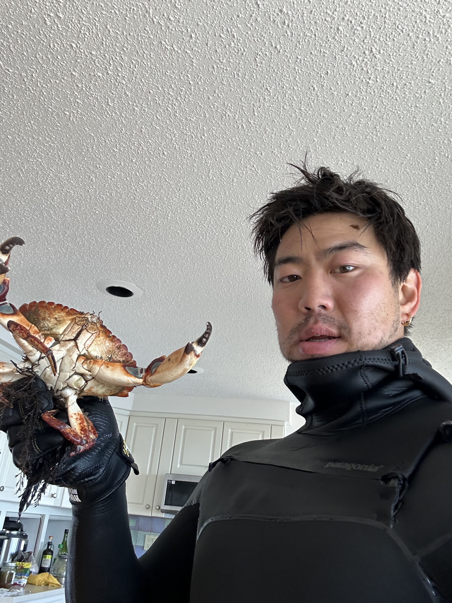

My practice begins with the everyday: a shared meal, a ritual, a screen. I find where self meets system, representation intersects with reality, and subsistence is performed. Baudrillard, Haraway, and Deleuze inform how I think about value, labor, survival, and the blurred line between nature and culture. I work with bodies—human, technological, and collective—to explore how identity is shaped through structures of relation. My work often takes the form of intervention—participatory, performative, and grounded in process.

Download My CV
To learn more about my academic and professional background, feel free to download my CV below:
Download CV